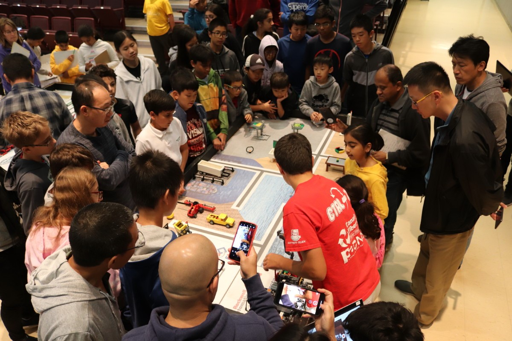
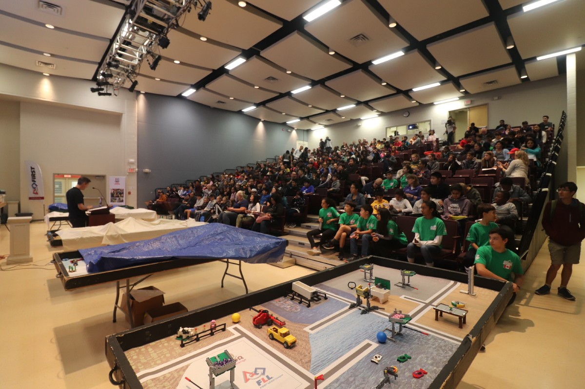
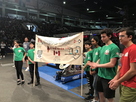
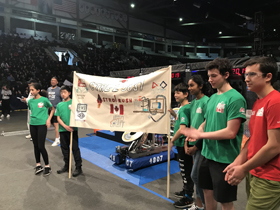

On Saturday, September 22, 2018, Ctrl-Z presented to many new and returning teams (over 350 attendees) at the FLL INTO ORBIT Season Kick-off and Training Event hosted at Bayview Glen School. There, the team refreshed and helped improve many enthusiasts' building, programming, and research skills. It shared various concepts, from introductory to advanced, to help other teams make the best of this year’s season.
 On November 3, 2018, Ctrl-Z, Team 5831, assisted at The Robot Training Camp, hosted by Sterling Hall School, in preparation for the upcoming FLL regional qualifying tournaments which occur in late November/early December. At the event, Ctrl-Z’s seven team members and youth coach, Alex Alexiev, officiated robot matches (including refereeing, field setup and score keeping) and held interactive workshops on the subjects of base robot and attachment design and intermediate and advanced programming. Approximately 50 attended the event from nine FLL teams (TCDSB and independent schools) along with representatives of IBM Canada. Special thanks to Mr. Tim Nahachewsky, of Sterling Hall, for the opportunity to share our passion for STEM and robotics with our fellow FLL teams.
On December 1 and December 15, 2018, we volunteered to referee and perform field setup at FLL regional qualifying tournaments hosted by Westview Centennial Secondary School and John Polanyi Collegiate Institute. This not only enabled us to gain a better understanding of the robot game rules, but also allowed team members to appreciate the roles of volunteers at tournaments we compete at. As well, it was another chance to give back to the FLL community that has done so much for the team.

On Saturday, February 23, 2019, members of our FLL robotics team, Ctrl-Z, were invited to attend the SYNNEX 2019 Ignite Canada Sales Conference at the Delta Hotels Toronto Airport and Conference Centre. It was a cold morning, but when we entered the conference room, we were warmly welcomed by FIRST Canada’s Vice President, Partnerships, Ms. Kim Cooper. Ms. Cooper introduced the team members to Mr. Mark Hardy, Vice President of Product Management SYNNEX Canada. We enjoyed a great breakfast and during opening remarks, Mr. Charlie Spano (Vice President of Finance, SYNNEX Canada) introduced our team members to over 200 SYNNEX vendors and tech executives. The team was called up onto stage to a play a fun version of ”Are You Smarter than a FIRST Robotics Student?” Each of us was paired with a SYNNEX executive. The SYNNEX executives were asked questions about FIRST and FLL and we were askedjk general trivia questions. One of the questions asked was, "in 1983, what was the selling price of the Motorola Dynatac cell phone?” We could not believe it cost over $4,000! After the trivia segment, we were asked various questions about our FLL innovative solution, the Astrobrush. We were also asked about how FIRST Robotics has helped us in school and in life. We would like to thank SYNNEX Canada, FIRST Robotics Canada, and our coaches for providing us with this tremendous opportunity to share our ideas and our passion for STEM. We will not forget this event!
On Saturday, April 13, 2019, Ctrl-Z Bayview Glen was invited to the FIRST Robotics Competition (FRC) Provincial Championships held at the Paramount Foods Centre in Mississauga, ON. The event was an opportunity for the FRC competitors and fans to recognize Ctrl-Z for having recently won the FLL Ontario East Provincial Championship at UOIT and to send the team off to the Detroit FIRST Championships. Ctrl-Z demonstrated its robot to an audience of about 2,500 at the FRC Provincials. In addition, it shared its passion for its innovative solution, the Astrobrush Microgravity Irrigating Toothbrush, with interested adults and children of all ages.

 
